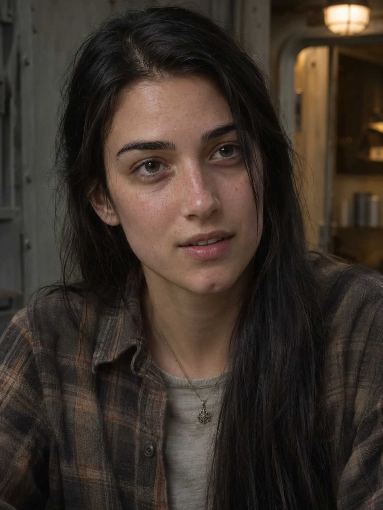
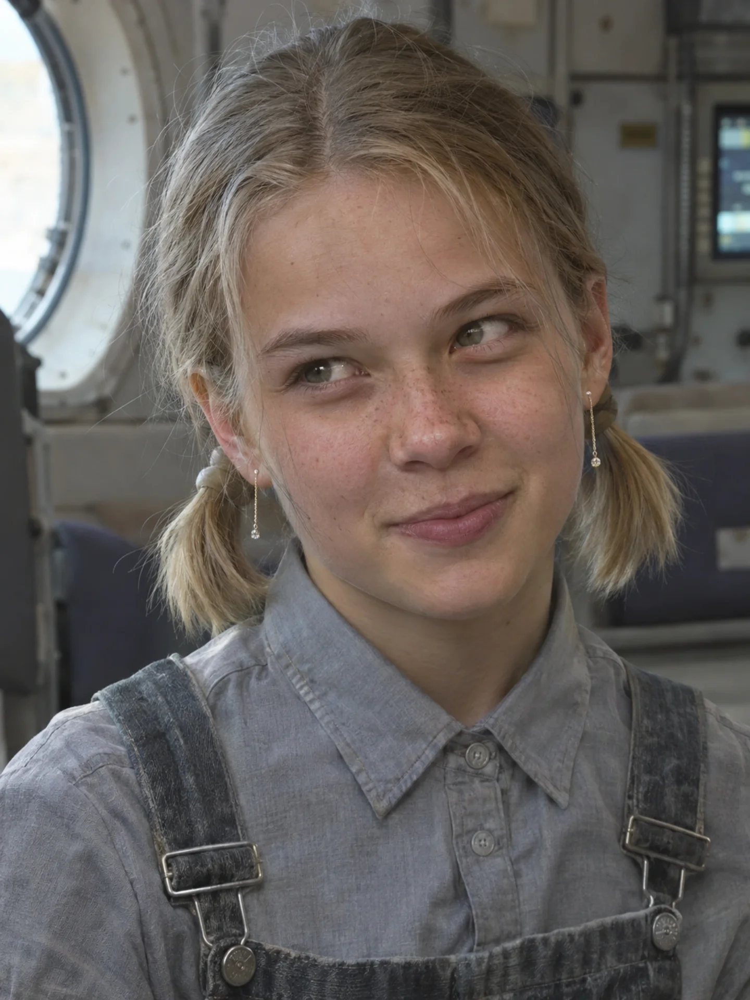

Инна
6 вариантов · inna001, inna002, inna003, inna004, inna005, inna006
Открыть все вариантыОпубликованные типажи и сцены для выбора внешности.
6 вариантов · inna001, inna002, inna003, inna004, inna005, inna006
Открыть все варианты
6 вариантов · dina001, dina002, dina003, dina004, dina005, dina006
Открыть все варианты
6 вариантов · semen001, semen002, semen003, semen004, semen005, semen006
Открыть все варианты
7 вариантов · ira001, ira002, ira003, ira004, ira005, ira006, ira007
Открыть все варианты
7 вариантов · senka001, senka002, senka003, senka004, senka005, senka006, senka007
Открыть все варианты
12 вариантов · dimka001, dimka002, dimka003, dimka004, dimka005, dimka006, dimka007, dimka008, dimka009, dimka010, dimka011, dimka012
Открыть все вариантыПросьба выбрать основные образы и указать нужные правки. Полные модельные листы готовятся после выбора.